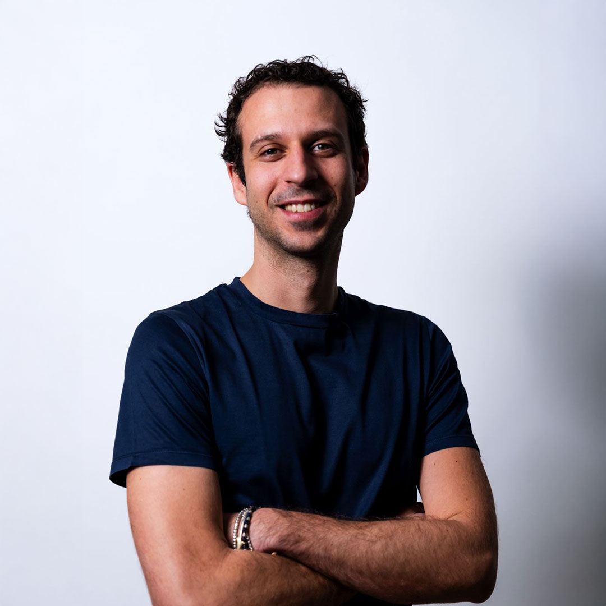
Marco Vita
Co-founder and CEO. Executive MBA at Politecnico di Milano. Serie A basketball referee.
We are LAIF, a software house based in Bologna bringing together software, data and artificial intelligence for companies in Italy. Curiosity is where we start. Building together is how we work.
Three founders in 2024, today a team of more than thirty professionals across software, data, AI and product.

Co-founder and CEO. Executive MBA at Politecnico di Milano. Serie A basketball referee.
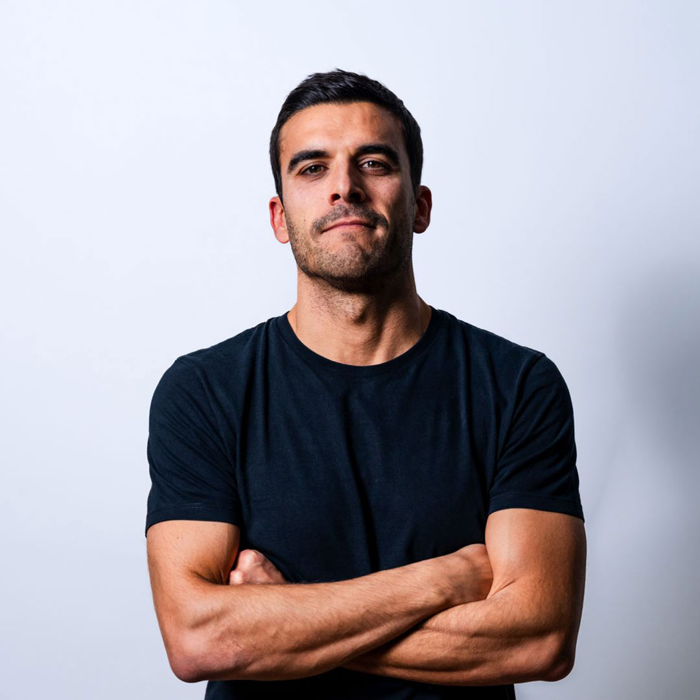
Co-founder and CCO. Co-founder of LAIF and Helia.
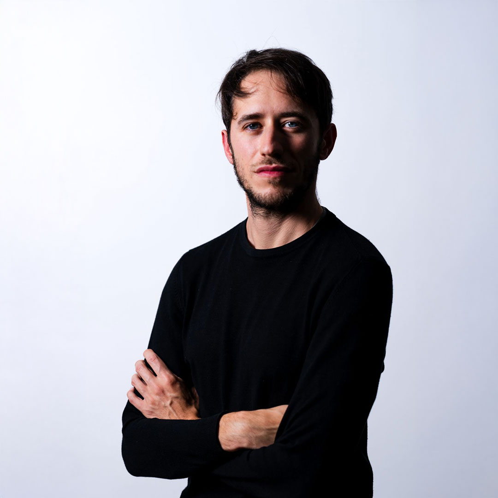
Co-founder and CTO. Co-founder of LAIF and Helia. Making technology accessible.
Data & AI Team Leader
From “Meet the team”, LAIF on LinkedIn“Mountaineer by day, board gamer by night. For me Laif is a new challenge.”
Data & AI Team Leader
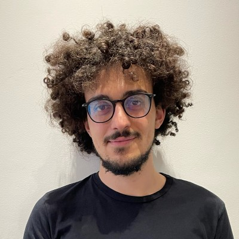
Data & AI Team Leader
Solution Architect
From “Meet the team”, LAIF on LinkedIn“Belarusian hardware, Mantuan model, Romagnol training set.”
AI Engineer
From “Meet the team”, LAIF on LinkedIn“At Laif I found a group that encourages new approaches, where people help each other and grow together.”
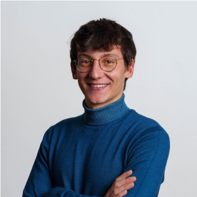
AI Engineer
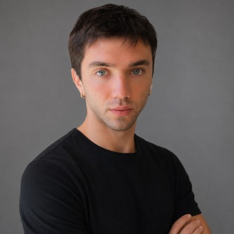
AI Engineer
Frontend Developer
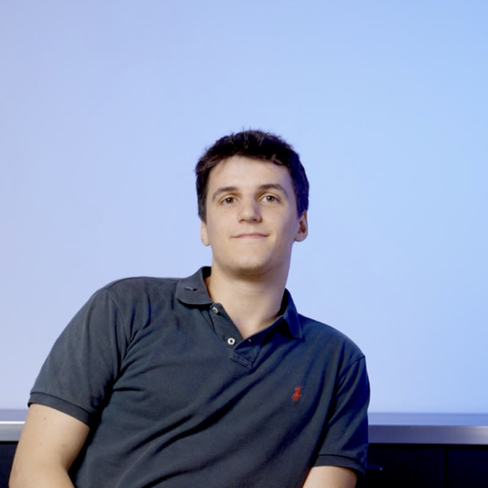
Full Stack AI Engineer
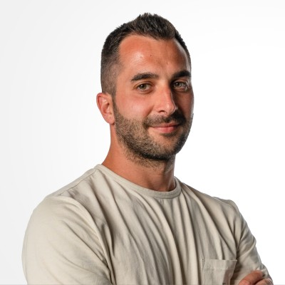
Full Stack Software Engineer
From “Meet the team”, LAIF on LinkedIn“We create real solutions that solve real problems for companies.”
Full Stack Developer · ETL and infrastructure
From “Meet the team”, LAIF on LinkedIn“At Laif I found a truly people-first environment, where people come first and collaboration makes the difference.”
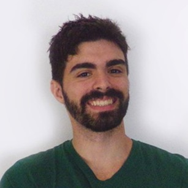
Full Stack Developer
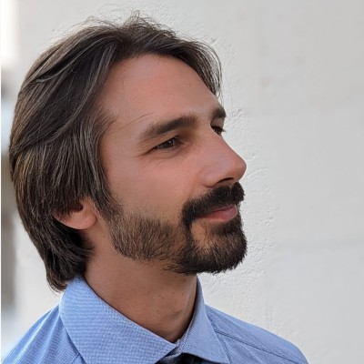
Full Stack Developer
Full Stack Developer
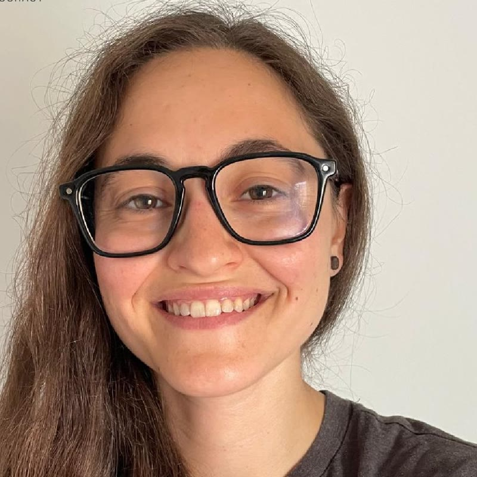
Front-End Developer
From “Meet the team”, LAIF on LinkedIn“For me, LAIF is above all the opportunity to develop products that have a real impact on people’s work.”
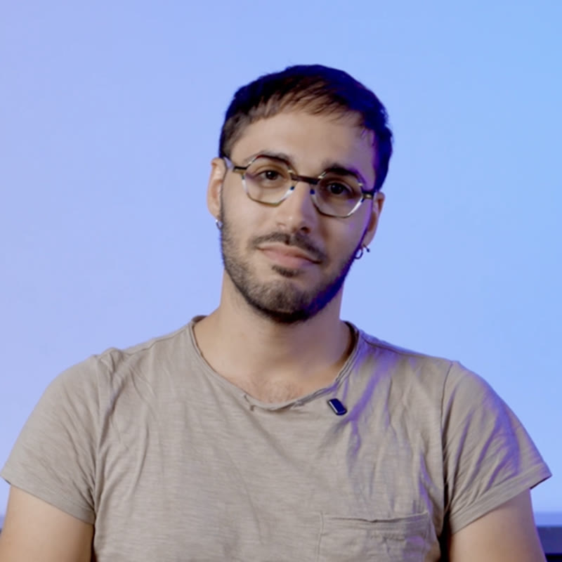
Product Engineer
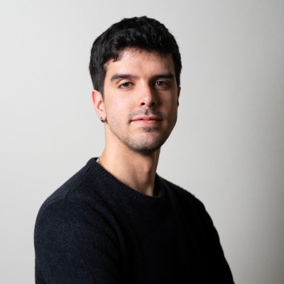
Product Engineer
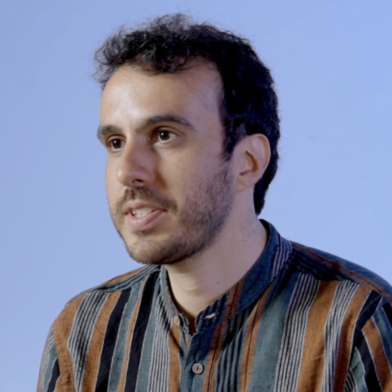
R&D Software Engineer
Full Stack Developer
Access to data shouldn’t be a privilege. We make digital innovation accessible to every business, including those that have been left behind. Four values guide how we do it.
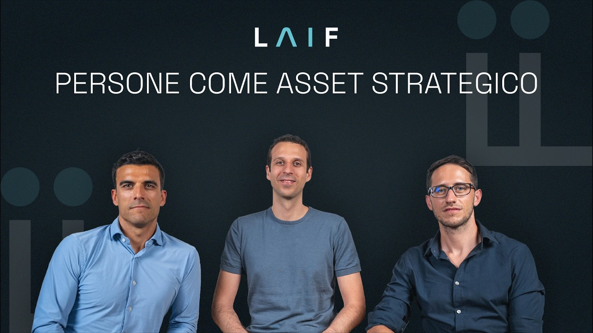
At LAIF every project, every choice and every solution must always create concrete value for the people it is meant for. Because technology only truly makes sense when it improves the way people work and spend their time.
People – the team, our clients and the community around us – are the starting point of every choice.
Before strategy, technology and processes, what always comes first is the real impact on the lives of those who work with us and those who use what we build.
People are our only true asset. Before every choice – strategic, technological or process-related – we ask ourselves what effect it will have on people: those who work at Laif, those who use, directly or indirectly, the solutions we build, and the community around us.
We say people first, not customer first: not to put clients second, but because caring for clients starts with a sustainable, healthy team. We want to pursue ambitious goals while respecting human sustainability, long-term growth and mutual trust. We hire for attitude first, more than for technical skills, and we win as a team: we collaborate because it is more effective, not just more pleasant, knowing that different perspectives help us make better decisions. People are free to express themselves and cultivate their talents.
We work with flexibility, trust and a few clear rules: quality, respect, transparency. Leadership is not a title but a capability expected at every level: we listen, give and ask for feedback, encourage, and offer help even when it isn’t asked for. We cultivate a strong sense of belonging. That doesn’t mean turning colleagues into family, but sharing values within a community, replacing outdated organisational models with healthier ways of doing business.
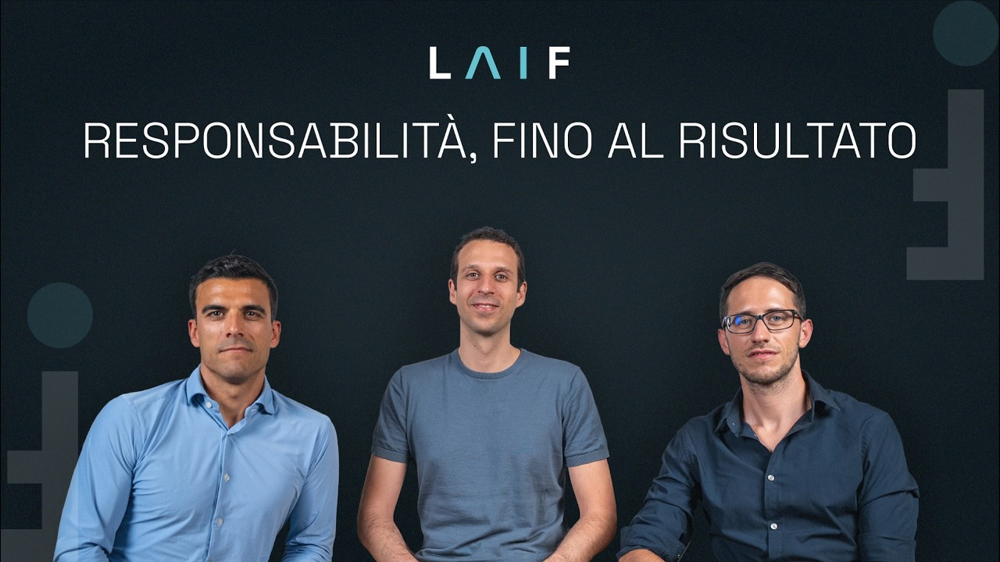
For us, a project goes beyond the contract and simply meeting obligations. We aren’t satisfied until what we build is actually used and brings value to the company we work with.
Great ideas only matter when they become solutions that work and are genuinely adopted.
We take responsibility for results and turn mistakes into learning: no excuses, because discipline is the price of excellence.
We work in digital innovation, but technology is not an end in itself: an idea is only worth something if it creates real value. The solutions we deliver must work reliably and actually be used, and our obsession is seeing them through to full adoption.
We measure success by the concrete change we bring to people’s work, and we have a single compass: finishing what we start, with the right quality and on time. The freedom to experiment must always be balanced with the sustainability of the company: profitability is the non-negotiable condition for growing and fulfilling our mission. Discipline keeps flexibility from turning into chaos: we work in a lean, measured way, on shared and transparent metrics.
We are a data company and we use data on ourselves too, to support decisions and keep execution at the centre. We take responsibility for our actions and reject a culture of excuses. Mistakes are a natural part of a healthy process: when we get things wrong, we prefer to do it quickly, so we can get back up and learn fast. We come out of every project better at what we do.
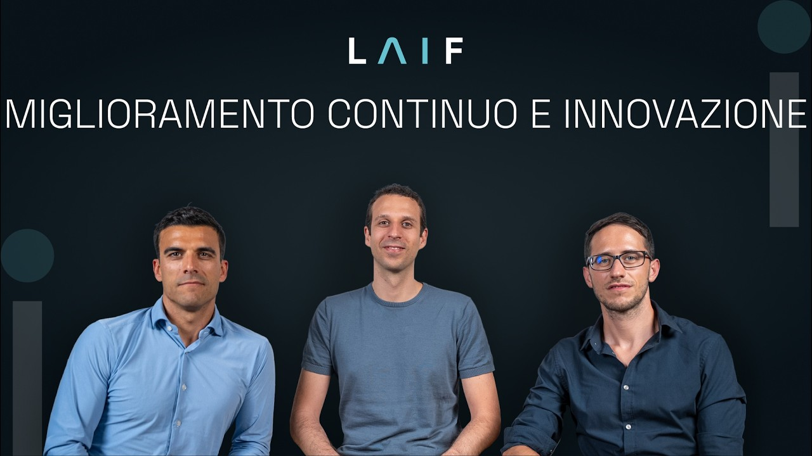
Improving means, first of all, removing what doesn’t create value. We simplify processes, automate repetitive tasks and make the most of people’s time where it can really make a difference. Because innovating also means never settling for what already works, but continuing to push the limits a little further.
We remove complexity and needless steps so time is spent only where it creates value.
We never settle: our drive for excellence pushes us to move the limits a little further every time.
We build our way of working on efficient operations, cutting out superstructures, repetition and unnecessary steps: people’s time should only go into activities that create value, namely learning, building, validating. Every needless step, at any stage of a project, from sales to support, has to go. We automate what is repetitive and low-value, and we don’t optimise what shouldn’t exist in the first place. We prefer few tools, lean processes and autonomous people.
From this base we push forward. We are passionate about what we build and find satisfaction, personal and collective, in the quality and usefulness of our products. We are ambitious and don’t settle for mediocrity: our pursuit of excellence is contagious, because it drives everyone to care about details and take on difficult challenges.
We face change with confidence and humility, taking smart risks, because risk is the only path to evolution, for us and for those who benefit from our work.
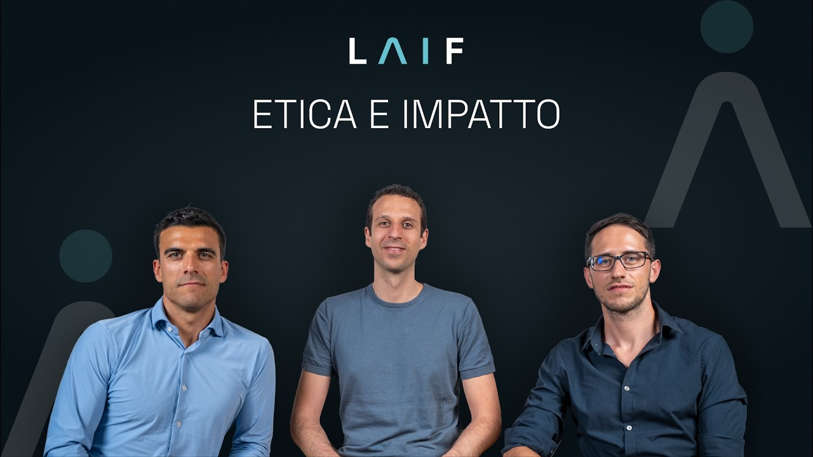
In a world where profit often drives decisions, staying true to your principles isn’t always easy. Especially when it means choosing which projects to bring to life and which to turn down. At LAIF we choose to build only what we can be proud of, putting our skills to work on projects that create real value for people and their work.
We only build what we are proud of. We want to give value back to the ecosystem, putting the power of data within reach of every business, including those long left behind.
Ethics guides everything we do: within the team, in the products we build, in the clients we choose and in our relationship with society and the environment. Technology and AI are not ends but means to improve people’s lives, and we know the tools we use are not ethically neutral: we study how they work and commit to using them responsibly, careful never to use them in harmful ways.
The practical meaning of our mission is Data Democracy: putting quality digital innovation within reach of every business, including the smallest ones and those that have fallen behind. That is how we create a positive impact on the ecosystem around us.
We choose carefully the people, clients and projects we work with, and we put our skills at the service of those who create real value, with respect for people and their work. On this we take a stand: we are on the side of those who build, and we never put our skills at the service of war, exploitation or discrimination.
Every year we dedicate at least one pro bono project to non-profit organisations, because giving back is part of how we do business. We build what we are proud of.
LAIF was founded in 2024 where engineering, mathematics and physics meet.
Today the aim is to bring different perspectives together to build tools that truly become part of the work. Our ties to the local area meet the desire to help ideas, people and new ventures grow.
Via Galliera 32 · 40121 Bologna
We incubate ideas. We bring our skills to pro bono projects. We build partnerships.
Alongside our work with companies, we support products and initiatives that can bring value to people and the local area. A web of experiences that also feeds what we build for our clients.
Discover products and initiatives


Tell us which activity you want to improve, who is involved and which tools you use. We’ll define the first step from there.
Let’s talk